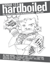

<div class="sidebar" id="issues">


<!--pagename, work in progress


<div class="pagename" id="issues">

archived issues

</div>


-->




<br>

<h2><span class="isnumber">issue 12.5</span><br>

<span class="isdate">April 2009</span></h2>


<h3>Want to read the original <a href="125.pdf">pdf?</a></h3>


table of contents<br><br>

<ul>

<li><a href="index.html"><span class="article">editor's notes</span><br></a>

<span class="author">by julie tse</span></li>

<br>


<li><a href="125-3-dartmouth.html"><span class="article">the dartmouth debacle</span><br></a>

<span class="author">by katherine bai</span></li>

<br>


<li><a href="125-3-model.html"><span class="article">jindal: the republican’s model “model minority”</span><br></a>

<span class="author">by montague hung</span></li>

<br>


<li><a href="125-4-world.html"><span class="article">third world, second thoughts</span><br></a>

<span class="author">by annie cho</span></li>

<br>


<li><a href="125-5-eat.html"><span class="article">to eat or not to eat, that is the question</span><br></a>

<span class="author">by tawny tsang</span></li>

<br>


<li><a href="125-5-gloss.html"><span class="article">beneath the gloss: <i>children of invention</i> review</span><br></a>

<span class="author">by emily yu</span></li>

<br>


<li><a href="125-6-tape.html"><span class="article">bar codes, duct tape and education</span><br></a>

<span class="author">by melani sutedja</span></li>

<br>


<li><a href="125-7-ghost.html"><span class="article">beijing, the modern ghost town</span><br></a>

<span class="author">by diane ling</span></li>

<br>


<li><a href="125-8-esl.html"><span class="article">fighting esl (english as a superior language)</span><br></a>

<span class="author">by denise wong</span></li>

<br>


<li><a href="125-9-conscience.html"><span class="article">living with your conscience</span><br></a>

<span class="author">by afshan qureshi</span></li>

<br>


<li><a href="125-10-peace.html"><span class="article">search for peace</span><br></a>

<span class="author">by laylaa abdul-khabir</span></li>

<br>


<li><a href="125-11-punjabi.html"><span class="article">We are All Punjabi</span><br></a>

<span class="author">by mariam malik</span></li>

<br>


<li><a href="125-12-aoki.html"><span class="article"><b>hardboiled</b> says goodbye to Richard Aoki</span><br></a>

<span class="author">by annie kim noguchi</span></li>

<br>


</ul>

</div>

